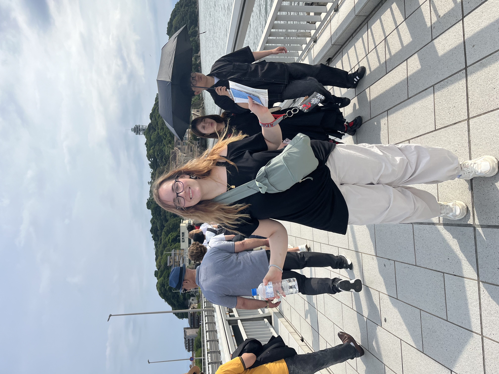
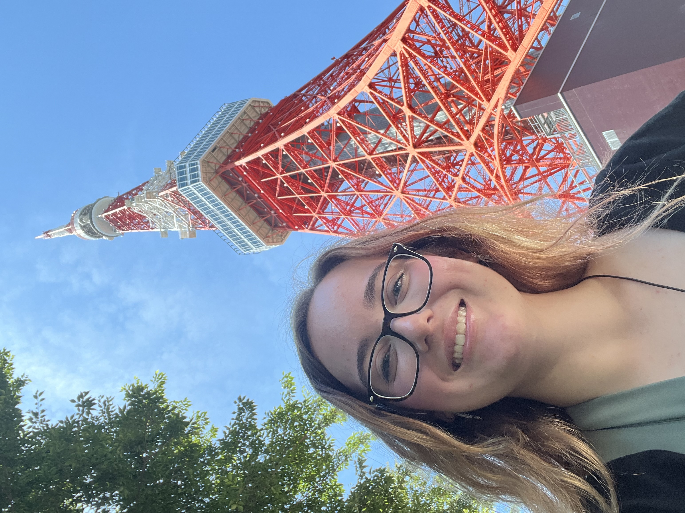
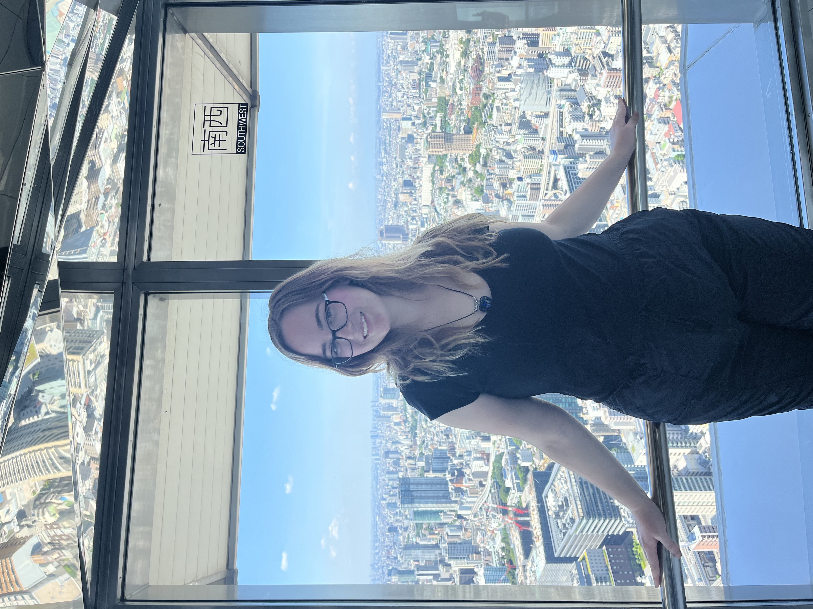

In the summer of 2024, I went on a study abroad trip to Japan, visiting the cities of Tokyo and Kyoto. During my time there, I experienced and learned so much. I visited temples and shrines, explored Japanese culture and history, and strengthened my journalistic and social media skills. Our classes focused on documenting experiences through photos, videos, and captions. They also taught us how to find engaging topics and write articles that allowed readers to feel immersed in the journey.
Many of the new things I encountered involved food, culture, architecture, plants, and landmarks. Some of the foods I tried included daifuku, octopus, and anpan. Japanese culture was very different from Western culture, and adjusting to it was the hardest part of the trip. Almost no one spoke English, and signs rarely had English translations. Google Translate quickly became a daily tool to help us navigate.
As a white person, being a minority for the first time was a very strange and eye-opening experience. I stood out in the crowd, and only people from my school looked similar to me. Locals would sometimes point and stare at our group, since it was rare for them to see Westerners. This gave me a completely new perspective. It helped me better understand, on a deeper level, what immigrants who move to America must feel!
  